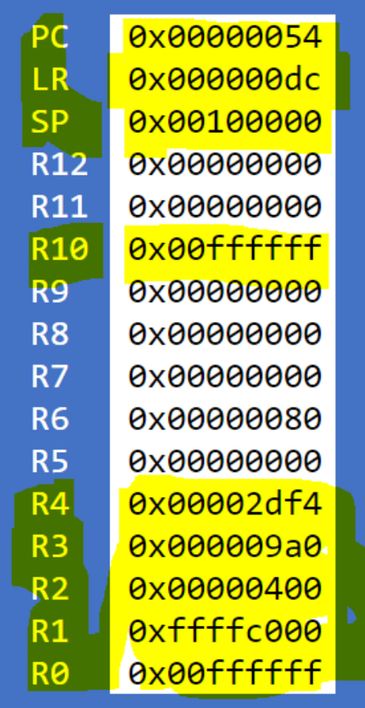

L’informatique à partir du métal #
Richard Pawson & Peter Higginson
Traduction semi automatisée des premiers chapitres du livre disponible ici

Fondamentaux du langage d’assemblage #
Chapitre 1. Introduction au langage d’assemblage et à ARMlite #
Le programme listé ci-dessous est écrit en langage assembleur – il peut vous sembler très peu familier ! Le langage d’assemblage est un langage de programmation “de bas niveau”, chaque instruction (ligne de code dans ce cas) effectue une opération très simple, et il peut falloir de nombreuses instructions de ce type pour correspondre à la fonctionnalité d’une seule ligne de code dans un langage de haut niveau (tel que Python, VB ou C#).
MOV R1, #.PixelScreen
MOV R2, #screen2
MOV R6, #0
MOV R9, #.black
MOV R10, #.white
MOV R3, #0
loopWhite: STR R10, [R2+R3]
ADD R3, R3, #4
CMP R3, #12288
BLT loopWhite
MOV R3, #260
randLoop: LDR R0, .Random
AND R0, R0, #1
CMP R0, #0
BNE .+2
STR R9, [R2+R3]
BL nextCell
CMP R3, #12032
BLT randLoop
copyScreen2to1: MOV R3, #0
copyLoop: LDR R0, [R2+R3]
STR R0, [R1+R3]
ADD R3, R3, #4
CMP R3, #12288
BLT copyLoop
ADD R6, R6, #1
MOV R3, #260
nextGenLoop: MOV R5, #0
SUB R4, R3, #256
BL countIfLive
SUB R4, R3, #252
BL countIfLive
ADD R4, R3, #4
BL countIfLive
ADD R4, R3, #260
BL countIfLive
ADD R4, R3, #256
BL countIfLive
ADD R4, R3, #252
BL countIfLive
SUB R4, R3, #4
BL countIfLive
SUB R4, R3, #260
BL countIfLive
CMP R5, #4
BLT .+3
STR R10, [R2+R3]
B continue
CMP R5, #3
BLT .+3
STR R9, [R2+R3]
B continue
CMP R5, #2
BLT .+2
B continue
STR R10, [R2+R3]
continue: BL nextCell
MOV R0, #12032
CMP R3, R0
BLT nextGenLoop
B copyScreen2to1
countIfLive: LDR R0, [R1+R4]
CMP R0, R10 //White
BEQ .+2
ADD R5, R5, #1
RET
nextCell:
ADD R3, R3, #4
AND R0, R3, #255
CMP R0, #0
BEQ .-3
CMP R0, #252
BEQ .-5
RET
HALT
.ALIGN 1024
screen2: 0
Chaque instruction en langage assembleur correspond à une opération exécutable directement par les circuits électroniques du processeur. Différents processeurs ont donc différents langages d’assemblage, bien qu’il existe de nombreuses caractéristiques communes - le langage présenté ici est pour un processeur ARM 32 bits.
Un processeur ne peut pas exécuter directement le langage d’assemblage : chaque ligne de code doit d’abord être traduite en un “code machine” - un processus appelé “assemblage” et l’outil permettant d’effectuer la conversion est appelé assembleur - mais chaque langage d’assemblage donne un code 32 bits.
Tout au long de ce livre, nous allons utiliser un programme en ligne appelé ARMlite, qui simule un ordinateur simple construit autour d’une version réduite d’un processeur ARM 32 bits :

Vous pouvez voir que l’écran est divisé en quatre zones principales : Programme, Processeur, Mémoire et Entrée/Sortie.
La mémoire est composée de mots de 32 bits. Dans la vue ci-dessus, chaque mot contient zéro, mais cela s’affiche sous la forme 0x00000000. Le 0x est un préfixe standard indiquant que ce qui suit est au format hexadécimal (hex).
Exercice 1 #
Accédez à la simulation via : ARMLite de préférence avec Chrome. (Tous les navigateurs modernes devraient fonctionner, mais pas IE11).
Cliquez sur n’importe quel mot mémoire visible et tapez
101(suivi de la touche Retour).Quelle valeur est affichée et pourquoi ?
Sur un autre mot mémoire, saisir
0x101Quelle valeur est affichée et pourquoi ?
Sur un autre mot mémoire, saisir
0b101Quelle valeur est affichée et pourquoi ?
Si vous passez maintenant la souris (ne cliquez pas) sur l’un des mots mémoire où vous avez entré une valeur, vous obtiendrez une “info-bulle” contextuelle.
Que vous dit l’info-bulle ?
Le sélecteur déroulant affichant
Hexpermet de changer la base dans laquelle s’affiche. La modification de la base ne modifie pas la valeur des données sous-jacentes.Remplacez-le par Décimal (non signé). Collez une capture d’écran partielle montrant les trois mots mémoire que vous avez saisis, dans leur nouveau format. Lorsque vous passez la souris sur l’un de ces mots, qu’est-ce qui apparaît maintenant dans l’info-bulle ?\ La modification de la représentation des données en mémoire modifie-t-elle également la représentation des en-têtes de ligne et de colonne (les chiffres blancs sur fond bleu) ?
Adressage #
La mémoire est disposée en quatre colonnes, uniquement pour des raisons de
commodité visuelle. Chaque mot de mémoire a une « adresse » unique - un nombre
hexadécimal à cinq chiffres. Les quatre premiers chiffres de l’adresse sont
indiqués par l’en-tête de ligne et l’adresse complète est spécifiée en ajoutant
le seul chiffre hexadécimal indiqué dans l’en-tête de colonne.
Ainsi, l’adresse du mot en haut à gauche sur cet écran 0x00000 et celle
à droite est 0x001fc
Exercice 2 #
Quelle est l’adresse du mot affiché en surbrillance ?
Si l’adresse comporte cinq chiffres hexadécimaux et que chaque chiffre est de 4 bits, quelle est la plus grande adresse possible, sous forme de nombre hexadécimal et en décimal ?

Pourquoi les colonnes d’adresse montent-elles par sauts de quatre
(0x0, 0x4, 0x8, 0xc) ? Chaque mot de 32 bits est composé de quatre ‘octets’
de 8 bits. ARMlite, comme la plupart des processeurs modernes, utilise
“l’adressage des octets” pour la mémoire. Lors du stockage ou de la
récupération d’un mot (ce que nous apprendrons à faire au chapitre 3), vous
ne spécifiez que l’adresse du premier des quatre octets composant ce mot.
Qu’y a-t-il dans un mot ? #
La taille d’un « mot » varie d’une machine à l’autre. Les ordinateurs modernes ont généralement des mots de 32 ou 64 bits ; les plus anciens étaient de 16, 8 ou 4 bits. Et avant l’émergence du microprocesseur monopuce, les ordinateurs avaient des tailles de mots personnalisées : 18,20,36,40,60…
Cependant, depuis l’avènement des puces de mémoire à semi-conducteurs, la mémoire a été mesurée et gérée en «octets», où un octet est toujours de 8 bits, quelle que soit la taille de mot de la machine dans laquelle la mémoire sera utilisée.
ARMlite, comme tous les ordinateurs modernes, est un «ordinateur à programme enregistré» : la mémoire est utilisée à la fois pour stocker les instructions du programme et les données à manipuler. Pour exécuter un programme en langage assembleur, il est nécessaire à la fois de traduire les instructions du langage assembleur en code machine et de charger ces codes en mémoire. Sur les anciennes machines, il s’agissait de deux étapes distinctes : sur ARMLite, ils sont tous les deux exécutés en une étape.
Exercice 3 #
Accédez au simulateur via https://peterhigginson.co.uk/ARMlite/
Cliquez sur le bouton Modifier (sous le programme) , puis copiez et collez le programme complet en langage assembleur répertorié au début du chapitre, dans cette zone. (Vous devriez pouvoir copier les deux colonnes en une seule fois, mais si ce n’est pas possible, assurez-vous que le code de la deuxième colonne est placé après le code de la première colonne.)
Appuyez ensuite sur le bouton Soumettre . Cela ne devrait pas donner d’erreurs (si c’est le cas, vous avez mal collé le code). Avant de continuer, utilisez le bouton Enregistrer pour enregistrer le programme dans un fichier sur votre ordinateur local.
Submit a fait deux choses : d’abord, il a « assemblé » (traduit) le langage d’assemblage en code machine ; puis il a chargé le code machine en mémoire.
Vous verrez également qu’ARMlite a maintenant ajouté des “numéros de ligne” à votre programme. Ceux-ci ne font pas partie du langage d’assemblage (également connu sous le nom de “code source”), mais sont là pour vous aider à naviguer et à discuter de votre code.
Quel est le numéro de ligne le plus élevé ?
Si vous passez la souris sur l’une des lignes du code source (ce n’est qu’après qu’il a été soumis), vous verrez une info- bulle contextuelle qui indique l’adresse en mémoire de l’instruction de code machine correspondante.
Quelle adresse hexadécimale est donnée pour la ligne numéro 75 du code ? Collez une capture d’écran mettant en évidence le contenu de ce mot dans la zone mémoire.
(La raison pour laquelle il n’y a pas de code machine correspondant aux lignes 76 et 77 de la source, c’est que ces lignes ne sont pas strictement des instructions de processeur - ce sont des instructions à l’assembleur, connues sous le nom de ‘directives assembleur’. Nous en verros plus tard,mais ce n’est pas un point très important à comprendre.)
Exercice 4 #
Appuyez sur Modifier et essayez d’insérer :
- Quelques lignes vides
- Espaces supplémentaires avant une instruction, ou juste après une virgule (mais pas entre d’autres caractères)
- Un commentaire sur une ligne qui lui est propre, commençant par
//comme//Mon premier programme- Un commentaire après une instruction mais sur la même ligne
Soumettez à nouveau le code.
Qu’est-il arrivé aux :
- Lignes vides
- Espaces supplémentaires
- Les commentaires
- Les numéros de ligne
- Le nombre total d’instructions qui finissent comme des mots en mémoire ? (Pourquoi?)
Modifiez à nouveau et supprimez la virgule de la première ligne de code. Que se passe-t-il lorsque vous soumettez maintenant ?
Restaurez le programme dans son état d’origine, soit en revenant à Modifier, soit en le chargeant à nouveau et en le soumettant.
Le programme que vous avez chargé est une simulation d’une colonie d’organismes simples, naissant, se reproduisant et finissant par mourir. (Les cellules individuelles ne bougent jamais, mais les modèles de cellules qui naissent et meurent donnent l’impression d’un mouvement, et de nombreux modèles dynamiques intéressants émergent). Le code est une variante d’un programme très célèbre appelé (Life - Game of Life - le Jeu de la Vie).
Le jeu de la vie de Conway #
Le “Jeu de la vie”, également connu simplement sous le nom de “Vie” (ce n’est pas vraiment un jeu, c’est une simulation) a été conçu par le mathématicien britannique John Horton Conway en 1970. Au cours des 50 années qui ont suivi, il y a eu des implémentations écrites depuis presque chaque ordinateur fabriqué, réel et virtuel, y compris maintenant ARMlite.
Il simule la naissance, la reproduction et la mort d’organismes unicellulaires statiques vivant en communauté. Chaque emplacement sur la grille a jusqu’à 8 voisins immédiats. (Strictement, Life devrait être joué sur un tableau infini - l’écran ARMlite a des bords durs, et ceux-ci affectent le comportement.) Si un organisme a plus de trois voisins vivants, il mourra de « surpopulation ». S’il a moins d’un voisin vivant, il mourra de « solitude ». Si un emplacement vide a trois voisins vivants, un nouvel organisme y naîtra.
Fonctionnant sur une machine rapide, une simulation de la Vie produit des motifs d’une extraordinaire complexité. Commençant par une distribution aléatoire d’organismes vivants, la simulation changera dynamiquement pendant de nombreuses « générations » avant de s’installer dans un état stable composé de groupes statiques de cellules vivantes et de certains “oscillateurs” - un groupe qui parcourt un schéma répété.
Vous pouvez également observer des «planeurs» - de petits groupes de cellules qui semblent se déplacer (en diagonale) sur l’écran - en fait, les cellules ne bougent pas, mais le schéma des naissances et des décès se répète en se déplaçant d’un carré en diagonale à chaque cycle. Vous pouvez même observer (ou spécifier comme modèle de départ) un ou plusieurs “pistolets planeurs” qui émettront régulièrement des planeurs, et d’autres constructions encore plus complexes. Un canon planeur est montré sur la gauche.
La vie montre un exemple simple d ‘«automates cellulaires», qui est une branche de la recherche sur les formes de vie artificielles («Une vie»). L’initiateur de cette branche des mathématiques n’était autre que John von Neumann, qui a également apporté d’importantes contributions à de nombreuses autres branches des mathématiques, de l’informatique, des prévisions météorologiques, de la conception d’armes atomiques et de l’économie ! Von Neumann (“Johnny” pour ses amis) a postulé l’idée d’un automate qui pourrait à la fois faire un travail utile (comme un ordinateur) et se reproduire à partir de matières premières. Il faudrait 50 ans avant que quiconque ne parvienne à mettre en oeuvre un exemple de cela ; celui illustré à droite.
Crédits photos et lectures complémentaires : https://en.wikipedia.org/wiki/Conway%27s_Game_of_Life et https://en.wikipedia.org/wiki/Von_Neumann_universal_constructor


Exercice 5 #
Exécutez le programme à l’aide du bouton Exécuter :
Vous verrez une roue dentée en rotation apparaître près des commandes d’exécution pour indiquer que le processeur est actif.
Vous observerez également beaucoup d’activité dans « l’écran graphique » (le plus bas des trois volets sous Entrée/Sortie). Après un court instant (quelques secondes à quelques minutes), la colonie se stabilise.
À tout moment, vous pouvez appuyer sur le bouton Arrêter puis Exécuter à nouveau. Étant donné que le modèle de départ des cellules est aléatoire, le comportement sera différent à chaque fois que vous exécuterez.
Appuyez ensuite sur le bouton Pause . En plus de geler l’écran graphique et d’arrêter la roue dentée en rotation. Vous verrez également des reflets orange apparaître. Que pensez-vous qu’ils signifient ?
Vous pouvez continuer l’exécution en appuyant à nouveau sur play. Faites cela, puis faites une nouvelle pause.
Que fait le fait de cliquer sur ce bouton
?
Et celui-là
?
Que se passe-t-il si vous cliquez plusieurs fois de suite sur ce bouton ?
Enfin, en pause, cliquez sur la ligne numéro 21 du code source, ce qui peindra un fond rouge derrière le numéro de ligne. Cela s’appelle “définir un point d’arrêt” et entraînera une pause du traitement lorsque le point d’arrêt est dépassé.
Après avoir défini le point d’arrêt, continuez à courir jusqu’à ce que la pause soit observée (presque immédiatement !). Le processeur s’est-il arrêté juste avant ou juste après l’exécution de la ligne avec le point d’arrêt ?
À partir du point d’arrêt, vous constaterez que vous pouvez faire un seul pas ou continuer à courir lentement ou à pleine vitesse.
Pendant la pause, vous pouvez supprimer un point d’arrêt en cliquant à nouveau sur la ligne.
Registres #
Une autre chose que vous avez peut-être remarquée lors d’une pause, d’un pas à pas ou d’un fonctionnement lent, ce sont les changements fréquents des valeurs dans les « registres » - mis en évidence dans la capture d’écran ci-dessous. Chaque registre est comme un seul mot de mémoire de 32 bits, mais avec ces différences :
- Les registres sont beaucoup plus rapides d’accès que la mémoire principale (ce qui est quand même très rapide).
- Les valeurs des registres peuvent être manipulées directement par instructions. Pour manipuler une valeur conservée en mémoire, elle doit d’abord être chargée dans un registre, puis manipulée, puis (si la nouvelle valeur doit être conservée) stockée dans la mémoire - au même emplacement ou à un autre.
- Les registres ont un nom plutôt qu’une adresse.
- ARMlite a treize registres “à usage général”, nommés R0 à R12. Ceux-ci sont généralement utilisés pour contenir les éléments de données les plus fréquemment nécessaires au programme. Pour un petit programme, il est possible que tous les éléments de données nécessaires puissent être conservés dans ces registres.
- Il existe également trois registres « spéciaux », nommés PC, LR et SP. Ceux-ci sont généralement accessibles et manipulés par le processeur. Ils peuvent être accédés et même manipulés directement par les instructions du programme, bien qu’il y ait un risque d’interférer avec l’exécution normale du programme si vous ne faites pas attention.

Au chapitre 2, nous apprendrons à utiliser les registres à usage général.
Le code machine est rapide #
Exercice facultatif #
À l’aide d’un chronomètre, exécutez le programme Life pendant exactement 10 secondes avant de faire une pause, puis notez la valeur Count. Divisez-le par 10 pour obtenir une mesure approximative de la vitesse d’ARMlite, en instructions par seconde, lors de l’exécution sur votre navigateur et votre ordinateur.
Selon l’ordinateur physique que vous utilisez, ARMlite peut exécuter plusieurs millions d’instructions par seconde. Et c’est en fait très lent par rapport aux vitesses de traitement réelles, car ARMlite est une simulation. Sous les couvertures, ARMlite est un programme JavaScript qui interprète chaque instruction de code machine du programme que vous “exécutez” en appels de fonction JavaScript. Votre navigateur, à son tour doit traduire le JavaScript dans le code machine du processeur de votre ordinateur (qui peut être un processeur ARM ou un processeur Intel, avec un jeu d’instructions différent).
Si vous deviez exécuter le même code machine directement sur un processeur ARM et que l’écran graphique n’était qu’un ensemble de LED, par exemple, le programme fonctionnerait à des milliards d’instructions par seconde - et le modèle d’organismes se stabiliserait presque immédiatement.
Pourquoi apprendre la programmation en langage assembleur ? #
Aux débuts de l’informatique, le langage d’assemblage offrait une avancée considérable dans l’écriture du code machine en hexadécimal ou binaire (ou, communément, « octal »). Mais pourquoi devriez-vous l’apprendre aujourd’hui, alors qu’il existe une multitude de langages de programmation de haut niveau ? (En dehors du fait que vous devez apprendre un langage d’assemblage pour réussir vos examens !)
Si vous deviez poursuivre une carrière dans l’informatique, il est possible que vous deviez finir par écrire un langage d’assemblage, ou un langage de bas niveau tout comme le langage d’assemblage, à un moment donné. Mais il est également possible que vous fassiez toute une carrière dans l’informatique sans jamais revoir le langage d’assemblage ! Ce n’est donc pas vraiment un argument assez fort pour l’apprendre maintenant.
L’argument le plus fort pour apprendre le langage d’assemblage est qu’il vous donnera une meilleure compréhension de ce qui se passe au niveau du processeur lorsque vos programmes de langage de haut niveau s’exécutent. Par exemple, si vous continuez jusqu’au chapitre 5, vous devriez comprendre pourquoi, dans un langage de haut niveau, tout élément d’un tableau peut être accédé en temps $O(1)$ au lieu de $O(n)$. Pour utiliser une analogie, il n’est pas nécessaire de savoir comment fonctionne un moteur à combustion interne pour conduire une voiture, mais la plupart des pilotes de course ont une assez bonne compréhension de la mécanique de leur voiture, afin d’obtenir les meilleures performances.
La dernière raison, cependant, est que l’apprentissage du langage d’assemblage peut être très agréable. Une chose qui vous avez peut-être déjà frappé à propos du programme Life, c’est que ce petit programme (71 instructions et chacune n’effectuant qu’une opération très simple), produit un comportement assez complexe et intéressant. De nombreux exemples de langage d’assemblage que vous voyez dans les manuels ne couvrent que des exemples triviaux et, avouons-le , ennuyeux , tels que le tri de trois nombres dans l’ordre. Mais il est parfaitement faisable d’écrire des programmes intéressants en langage assembleur, et si vous suivez ce livre jusqu’au bout, vous écrirez une série de jeux, commençant simplement, mais finissant par une complexité satisfaisante. Vous pourrez également lire et comprendre exactement comment fonctionne le programme Life.
Chapitre 2 : Le compte est bon #
Dans les chapitres suivants de ce livre, nous allons écrire du code en langage assembleur pour implémenter un série de jeux. Dans ce premier chapitre, cependant, nous allons plutôt apprendre à jouer à un jeu - un qui implique l’écriture d’un langage d’assemblage. Le jeu est une variante du “Le compte est bon”, que vous avez peut-être rencontré auparavant, soit à la télévision, soit dans votre classe de mathématiques (sinon, consultez le panneau).
Votre tâche sera globalement similaire : étant donné un ensemble de nombres de départ et un ensemble défini d’opérations, vous devez écrire un programme court en langage assembleur qui aboutit au nombre cible (ou aussi proche que possible). Ne vous inquiétez pas : nous allons beaucoup nous entraîner à écrire le langage d’assemblage et les opérations spécifiques avant de devoir jouer au jeu. Et on ne vous demandera pas d’essayer de trouver une solution en 30 secondes !
Nous allons commencer par n’utiliser que l’addition et la soustraction. Nos chiffres initiaux sont $100 , 25, 8, 7, 3, 1$ et notre cible est 84. C’est un défi facile d’un point de vue mathématique : $1+8+100-25$. Voici une façon de coder cette expression en langage assembleur :
MOV R0,#1
ADD R1,R0,#8
ADD R2,R1,#100
SUB R3,R2,#25
HALT
Ce programme consiste en une séquence de cinq instructions, une par ligne.
Chaque instruction consiste en une « opération », représentée ici sous forme «
mnémonique » (généralement une abréviation de la description de l’instruction).
Vous avez probablement deviné que ADD et SUB sont les opérations d’addition et
de soustraction de valeurs, et que HALT arrête l’exécution du programme ;
MOV est l’opération de déplacement d’une valeur (ce qui signifie en fait “copier et déplacer”).
Chaque opération, à l’exception de HALT , est suivie d’un maximum de trois
‘opérandes’, spécifiant à quoi l’opération s’applique dans chaque cas.
Lorsqu’il y a plusieurs opérandes, ils doivent être séparés par des virgules.
Le dernier opérande dans les quatre premières des instructions ci-dessus, consiste en l’un de nos nombres initiaux : $1, 8, 100$ et $25$, dans chaque cas précédé du symbole # (prononcé ‘hash’ - pas ‘hashtag’, incidemment). Dans la programmation en langage assembleur, celles-ci sont appelées valeurs “immédiates”, ce qui signifie qu’elles sont écrites directement dans le code du programme.
Les autres opérandes - R0, R1, R2 et R3 - spécifient des registres, qui sont
utilisés pour conserver les valeurs initiales, les calculs intermédiaires et le
résultat. Les registres sont la forme de mémoire la plus rapide et leur contenu
peut être manipulé directement. Dans ce chapitre, tous les calculs peuvent être
effectués en utilisant uniquement les treize registres “à usage général” (R0 à
R12). Plus tard, vous apprendrez à gérer des quantités de données beaucoup plus
importantes, conservées dans la mémoire principale. Cependant, comme, sur
ARMlite, la plupart des opérations ne peuvent pas être appliquées directement
aux valeurs stockées dans la mémoire principale, vous constaterez qu’une grande
partie du langage d’assemblage la programmation consiste à “charger” des
valeurs de la mémoire dans des registres, à les manipuler dans des registres
et, le cas échéant, à stocker de nouvelles valeurs ou des valeurs modifiées
dans la mémoire. Vous constaterez également que les entrées/sorties sont
génrées de la même manière.
Le compte est bon #
“le compte est bon” est un jeu télévisé britannique de longue date, impliquant des tâches de mots et de nombres. (Voir https://en.wikipedia.org/wiki/countdown_(game_show) pour plus de contexte).
Dans la version originale de la partie nombres du jeu, les joueurs reçoivent un ensemble de nombres sélectionnés au hasard. six nombres “initiaux” (dans la plage de 1 à 100), puis un nombre cible (dans la plage de 1 à 999). Travaillant contre la montre, ils doivent utiliser les nombres initiaux et les quatre opérations mathématiques de base (additionner, soustraire, multiplier, diviser) afin de produire le nombre cible - ou de s’en approcher le plus possible. (La cible étant choisie au hasard, il n’est pas forcément toujours possible de la faire correspondre exactement). Vous pouvez utiliser des parenthèses ou le calcul peut être évalué comme une série d’étapes. Les nombres fractionnaires ne sont pas autorisés - et les calculatrices non plus !
Par exemple, étant donné les nombres initiaux : 25, 50, 75 , 100, 3, 6 et le nombre cible : 952 , il est simple d’arriver à 953 (décalé d’un seul) comme suit :
6 + 3 = 9 * 100 = 900 + 50 = 950 + 75 / 25 = 953Tous les numéros originaux ont été utilisés dans ce cas. (Les joueurs ne sont pas tenus d’utiliser tous les numéros initiaux, mais chacun ne peut être utilisé qu’une seule fois). Étonnamment, il est possible d’obtenir la cible exactement, comme suit :
100 + 6 = 106 x3 = 318 x 75 = 23 850 - 50 = 23 800 /25 = 952Plus surprenant encore, la deuxième solution a été imaginée par un concurrent de l’émission télévisée dans le délai imparti de 30 secondes ! Vous pouvez le regarder faire, et la réaction étonnée des présentateurs ici.

Exercice 6 #
Configurez ARMlite pour afficher les nombres au format
Decimal (Unsigned). Cela facilitera les choses, dans un premier temps, données car notre jeu fonctionnera principalement avec des nombres décimaux.Sélectionnez Modifier pour pouvoir cliquer dans la zone de programme, puis copiez et collez le programme de cinq lignes ci-dessous dans cette zone de programme :
MOV R0,#1 ADD R1,R0,#8 ADD R2,R1,#100 SUB R3,R2,#25 HALTSoumettre, puis Exécuter le programme (avec le bouton ‘play’). Lorsque le programme s’arrête (presque immédiatement), collez un extrait d’écran indiquant uniquement la valeur de
R3.Remarque : Lorsque le programme s’est arrêté, si vous souhaitez le relancer, vous devez cliquer sur le bouton Arrêter avant Lecture.
Que se passe-t-il si, à l’arrêt, vous appuyez sur play sans d’abord appuyer sur stop ?
| Instruction | Interprétation |
|---|---|
MOV R0,#1 |
Déplacer (copier) la valeur immédiate 1 dans le registre R0 |
ADD R1,R0,#8 |
Ajouter 8 à la valeur actuellement dans R0 et mettre le résultat dans R1. Notez que R1, ici, est appelé le ‘registre de destination’ pour cette instruction. |
ADD R2,R1,#100 |
Ajouter 100 à la valeur actuellement dans R1 et mettre le résultat dans R2 |
SUB R3,R2,#25 |
Soustraire 25 de la valeur actuellement dans R2 et mettre le résultat dans R3 |
HALT |
Arrêter (temporairement) l’exécution du programme. |
Exercice 7 #
Si nécessaire, arrêtez le programme et utilisez cette fois le bouton Pas à pas pour l’exécuter une instruction à la fois. Notez qu’à chaque étape, la valeur d’ un registre a changé.
Notez également que le surligneur (orange) se déplace sur les instructions en langage d’assemblage et, simultanément, sur les instructions de «code machine» correspondantes conservées en mémoire.
En regardant attentivement les valeurs de registre changeantes et le surligneur de code, l’orange le surligneur indique l’instruction sur le point d’être exécutée, ou celle qui vient d’être exécutée ?
Dans notre exemple, nous avons utilisé un registre différent pour enregistrer chaque étape intermédiaire du calcul.
Cependant, ce n’est pas indispensable : on pourrait faire l’ensemble de ce calcul simple à l’aide d’un seul registre, mais en changeant son contenu à chaque étape, comme indiqué ci-dessous :
MOV R0,#1
ADD R0,R0,#8
ADD R0,R0,#100
SUB R0,R0,#25
HALT
Jusqu’à présent, dans l’exemple de code, l’opérande final pour les opérations MOV, ADD et SUB a toujours été une valeur immédiate (préfixée par #). Cependant, cet opérande peut également être spécifié comme un autre registre, comme illustré dans les exemples ci-dessous :
| Instruction | Interprétation |
|---|---|
ADD R3,R2,R1 |
Additionnez les valeurs de R2 et R1, et placez le résultat dans R3 |
ADD R4,#1,#2 |
Cette syntaxe est invalide - seul le dernier opérande peut être une valeur immédiate |
Multiplier et Diviser ? #
Le jeu des nombres du compte à rebours ne sera pas très difficile, ni très amusant, si nous sommes limités à opérations d’addition et de soustraction. ARMlite n’a actuellement aucun moyen d’effectuer une multiplication ou une division à l’aide d’une seule instruction, même sur des nombres entiers. Vous auriez besoin d’écrire vos propres routines pour cela (il y a un exemple de routine pour la multiplication d’entiers au chapitre 6).
Cependant, il existe plusieurs autres opérations à instruction unique que nous pouvons appliquer au jeu “le compte est bon”, et celles-ci rendront le jeu plus spécifique au domaine de l’informatique, et plus difficile également - car elles impliqueront de penser simultanément en décimal et en binaire (ou hexadécimal).
Multiplicateurs matériels #
Bon nombre des premiers ordinateurs électroniques numériques, tels que l’ENIAC (photo), avaient des multiplicateurs matériels, et certains avaient des diviseurs matériels. Cela était dû en partie au fait que la plupart des premiers ordinateurs étaient principalement appliqués à des calculs mathématiques complexes.
Avec la transition vers les «microprocesseurs» à puce unique, la multiplication et la division sont passées du matériel au logiciel, sous la forme de sous-programmes réutilisables construits à partir d’opérations d’addition, de soustraction et d’autres opérations bit à bit.
Cependant, la taille et la puissance des microprocesseurs ont depuis considérablement augmenté, de sorte que la plupart des processeurs modernes disposent de circuits matériels dédiés pour effectuer la multiplication et/ou la division, sur des entiers ou des nombres à virgule flottante. Dans ces cas, il y aura généralement une seule instruction en langage assembleur pour spécifier
Crédit photo et lecture complémentaires : wikpédia

Intructions bit à bit #
Le tableau ci-dessous répertorie cinq nouvelles instructions qui manipulent des valeurs dans des registres.
| Instruction | Exemple d’instruction | Description |
|---|---|---|
AND |
AND R2,R1,#4 |
Effectue un ET logique bit à bit sur les deux valeurs d’entrée, en résultat dans le bit équivalent du registre de destination. |
ORR |
ORR R1,R3,R5 |
Comme ci-dessus mais en utilisant un OU logique |
EOR |
EOR R1,R1,#15 |
Comme ci-dessus mais en utilisant un ‘OU exclusif’ logique |
LSL |
LSL R1,R1,#3 |
Décalage logique à gauche’. Décale chaque bit de la valeur d’entrée vers la gauche, du nombre de positions spécifié dans le troisième opérande, en perdant les bits les plus à gauche et en ajoutant des zéros à droite. |
LSR |
LSR R1,R1,R2 |
Décalage logique vers la droite’. Décale chaque bit de la valeur d’entrée vers la droite , du nombre de positions spécifié dans le troisième opérande, en perdant les bits les plus à droite et en ajoutant des zéros à gauche. |
Celles-ci sont toutes décrites comme des opérations “bit à bit”, car elles manipulent des bits individuels dans les opérandes. Ils sont mieux compris en visualisant les valeurs au format binaire (ou en hexadécimal si vous êtes expérimenté dans la transformation mentale de l’hexadécimal en binaire).
Exercice 8 #
Écrivez votre propre programme simple, qui commence par un MOV (comme dans l’exemple précédent) suivi de cinq instructions, en utilisant chacune des cinq nouvelles instructions répertoriées ci-dessus, une seule fois, mais dans l’ordre de votre choix – plus un
HALTà la fin, et avec les valeurs immédiates que vous souhaitez.Remarque : Gardez toutes vos valeurs immédiates inférieures à 100 (décimal). De plus, lorsque vous utilisez
LSL, ne vous déplacez pas de plus de, disons, # 8 places. L’utilisation de très grands nombres ou le déplacement de trop d’endroits vers la gauche risque de commencer à voir des résultats négatifs, ce qui sera déroutant à ce stade. (Nous couvrirons les nombres négatifs dans la dernière partie de ce chapitre.)Vous pouvez utiliser un registre de destination différent pour chaque instruction, ou vous pouvez choisir d’utiliser uniquement
R0, pour les registres source et destination dans chaque cas - les deux options fonctionneront.Collez votre programme complet, puis parcourez le programme en complétant le tableau ci-dessous.
Vous pouvez le faire soit en utilisant l’info-bulle, soit en changeant le format d’affichage entre décimal (non signé) et binaire. Il n’est pas nécessaire d’inclure les zéros non significatifs ou le préfixe
0bdans vos réponses, bien que vous puissiez le faire. Décrivez en mots, quel est l’effet sur un nombre décimal d’effectuer un décalage logique vers la gauche (LSL) d’un bit ? Et par deux bits ? De même, pour un décalage logique vers la droite (LSR) ?
| Instruction complète | Valeur décimale du registre de destination après l’exécuton | Valeur binaire du registre de destination après l’exécution de cette instruction |
|---|---|---|
MOV RO, |
||
HALT |
Jouer le jeu #
Vous êtes prêt à commencer à jouer. N’oubliez pas ces règles :
- Vous n’êtes pas obligé d’utiliser tous les chiffres initiaux, mais chacun ne peut être utilisé qu’une seule fois comme valeur immédiate.
- Vous pouvez utiliser autant de registres que vous le souhaitez, mais vous ne pouvez utiliser chaque registre qu’une seule fois comme registre de destination, puis une seule fois comme registre source (c’est-à-dire comme argument).
- Le résultat doit être visible dans un registre et doit être la bonne réponse
sous forme d’un nombre décimal. Par exemple, la réponse binaire
0b...101(5 en décimal) ne compterait pas comme décimal 101 !
Astuce : il peut être utile d’écrire le résultat décimal entrant dans le registre de destination pour chaque instruction dans un commentaire.
Exercice 9 #
Vos six numéros initiaux sont : 12 , 11, 7, 5, 3, 2 et votre numéro cible est : 79
Exercice 10 #
Vos six numéros initiaux sont : 99,77,33,31,14,12 et votre numéro cible est : 32
Exercice 11 #
Vos six nombres initiaux sont : 30,13,7,5,2,1 et votre nombre cible est : 390
Nombres négatifs #
Exercice 12 #
Réglez ARMlite pour afficher les données dans le format
Decimal (signed)Exécutez le programme simple suivant et capturez le résultat affiché dans R1.
MOV R0, #9999 LSL R1, R0, #18 HALT
Pourquoi le résultat est-il affiché sous la forme d’un nombre décimal négatif, et sans relation évidente (en décimal) à 9999?
Si vous utilisez l’infobulle, vous verrez que les représentations binaires de
R0 et R1 sont :
R0 - 0b00000000000000000010011100001111
R1 - 0b10011100001111000000000000000000
Comme indiqué par les points saillants ajoutés ci-dessus, le processeur a décalé la valeur binaire dans R0 vers la gauche de 18 bits pour produire la valeur dans R1, comme prévu.
En définissant le format d’affichage sur Décimal (signé) , nous demandons à ARMlite d’afficher toutes les valeurs de mot sous forme de nombre décimal signé (c’est-à-dire positif ou négatif), en interprétant leur représentation binaire comme 32- bit complément à deux.
Tout mot où le bit le plus à gauche ou “le plus significatif” est 1, sera un nombre négatif, s’il est interprété comme un format de complément à deux 32 bits. Mais ce bit ne représente pas simplement un bit plus ou moins (comme ce serait le cas pour une représentation “signe et amplitude”). Dans le format complément à deux 32 bits, le bit le plus à gauche reçoit la valeur négative : -231 ou -2147483648. Tous les autres bits à sa droite reçoivent des valeurs positives : +230, +229 … +21 .
Exercice 13 #
Basculez ARMlite pour afficher au format binaire.
Vous ne pouvez pas modifier directement les valeurs de registre, mais vous pouvez modifier les mots mémoire. Cliquez sur le mot mémoire en haut à gauche (adresse 0x00000) et tapez les valeurs suivantes, qui seront interprétées comme décimales et traduites au format complément à deux 32 bits, que vous pourrez ensuite recopier dans votre réponses.
Quelle est la représentation binaire de chacun de ces nombres décimaux signés :
1 -1 2 -2Essayez de repérer le motif, si vous le pouvez, avant de poursuivre votre lecture.
La méthode pour obtenir la version négative d’un nombre est la suivante :
- inverser (ou ‘retourner’) chacun des bits
- puis ajoutez 1 à la fin.
Nous pouvons simuler cela en introduisant une nouvelle opération MVN, qui
signifie ‘Move NOT’. Cela fonctionne comme MOV, mais chacun des bits du
deuxième opérande (qu’il s’agisse d’une valeur immédiate ou de la valeur
immédiate ou de la valeur dans un registre spécifié) se voit appliquer une
opération NON logique avant d’entrer dans le registre de destination.
Dans le code suivant, les deuxième et troisième instructions implémentent la transformation spécifiée ci-dessus :
MOV R0, #27
MVN R1, R0
ADD R2,R1,#1
HALT
Revenez au format d’affichage du complément à deux : Decimal (signed).
Vérifiez par vous-même que R2 finit par contenir -27, s’il est présenté sous
la forme d’un décimal signé.
Vous pouvez inverser cette transformation en soustrayant un puis en inversant tous les bits. Étonnamment, cependant, vous pourriez simplement appliquer à nouveau la transformation d’origine :
MOV R0, #27
MVN R1,R0
ADD R2,R1,#1
MVN R3, R2
ADD R4,R3,#1
HALT
Vérifiez par vous-même qu’en appliquant deux fois la même transformation, vous revenez (en R4) à la valeur initiale de 27.
A première vue, cette transformation en deux étapes peut sembler plutôt arbitraire. Mais ce qui est extraordinaire, c’est que ça marche. In signifie que le processeur peut ajouter et soustraire des nombres sans avoir à se soucier de savoir si les valeurs sont positives ou négatives pour commencer.
Exercice 14 #
Exécutez ce programme :
MOV R0, #27 MV R1, #-5 ADD R2, R0, R1 HALTEt vérifiez par vous-même que l’ajout de -5 à 27 produit le même résultat que la soustraction de 5 à 27.
Que se passe-t-il si vous ajoutez -49 à 27 ?
Chapitre 3 : le NIM (les allumettes) #
Dans ce chapitre, nous allons écrire un jeu très simple appelé Matchsticks. Le jeu commence avec une pile de 15 allumettes (bien que cela puisse être n’importe quel nombre). Les joueurs retirent à tour de rôle 1, 2 ou 3 allumettes de la pile restante. Un joueur gagne la partie en forçant son adversaire à prendre la dernière allumette. Notre implémentation opposera un seul joueur humain à l’ordinateur.
Pour implémenter le jeu, nous devrons apprendre à implémenter l’itération (boucles) et la sélection (branchement) en langage assembleur. Nous devrons également apprendre quelques modèles pour écrire du texte sur la console et lire les entrées de l’utilisateur pendant le jeu. Pour ce faire, nous devons d’abord comprendre le chargement et l’enregistrement de valeurs depuis/vers des emplacements de mémoire à l’aide de LDR - ‘LoaD
Register (from memory)’, et STR – ‘Store Register (to memory)’, instructions.
Travailler avec des adresses mémoire #
Exercice 15 #
Exécutez ARMlite avec le format d’affichage par défaut :
Hexet assurez-vous que le programme et la mémoire sont claires. (Le bouton Effacer , en bas à droite du simulateur, le fera, si nécessaire.)Entrez et soumettez le code suivant :
MOV R0, #255 STR R0, 68 HALT LDR R1, 72 HALTVous verrez que le code du programme a été traduit en code machine et chargé dans les cinq premiers mots de la mémoire principale.
Exécutez le programme et notez que lorsqu’il atteint le premier HALT, la valeur de l’un des autres mots dans la mémoire principale aura changé. Collez une capture d’écran de la mémoire en soulignant uniquement cet emplacement de mémoire modifié.
Expliquez pourquoi la valeur indiquée est ce qu’elle est et où elle se trouve.
Cliquez maintenant sur l’emplacement de mémoire immédiatement à droite de celui qui a été modifié et tapez une autre valeur décimale). Continuez à courir (en appuyant sur l’ icône de lecture ) et montrez, avec une capture d’écran partielle, que la valeur que vous avez entrée a été copiée (“chargée”) dans R1.
Pourquoi le deuxième opérande de l’ instruction LDR est-il 72 et non 69 ? Que se passe-t-il si vous le changez en 69 et que vous essayez à nouveau de courir ?
Il est très important de comprendre qu’avec le jeu d’instructions ARMlite :
- L’instruction
MOVne peut pas fonctionner avec des adresses mémoire – le deuxième opérande doit être un registre ou une valeur immédiate. (De même, pourMVN). - L’ instruction LDR ne peut pas être utilisée pour charger une valeur immédiate dans un registre – le deuxième opérande doit spécifier une adresse mémoire.
En revanche, dans certains processeurs réels, MOV (ou son équivalent) peut
gérer des registres, des valeurs immédiates ou des adresses mémoire. Un
avantage de la séparation forcée des rôles, comme sur ARMlite, est qu’elle
permet de rappeler au programmeur que les opérations impliquant des accès
mémoire sont plus lentes que celles qui ne fonctionnent qu’avec des registres
et/ou des valeurs immédiates.
RISC contre CISC #
Au fur et à mesure de l’évolution des premiers ordinateurs, les processeurs ont généralement acquis des jeux d’instructions plus importants, afin de permettre aux programmeurs d’exprimer plus facilement des algorithmes et donc d’améliorer leur productivité.
Cependant, dans les années 1980, il a été reconnu que, puisque presque toute la programmation était désormais effectuée dans des langages de haut niveau et automatiquement traduite en code machine, les arguments en faveur d’une lecture ou d’une écriture facile du langage d’assemblage machine pour les programmeurs humains étaient beaucoup plus faibles. En réduisant le jeu d’instructions, les processeurs pourraient être rendus plus performants. Le changement qui en a résulté dans la conception du processeur est devenu connu sous le nom de passage de CISC (Complex Instruction Set Computers) à RISC (Reduced Instruction Set Computers). La plupart des processeurs modernes sont désormais considérés comme RISC, bien qu’il n’y ait pas de définition précise de la distinction.
À l’époque du CISC, de nombreuses instructions pouvaient traiter directement des emplacements de mémoire. Avec RISC, le modèle le plus courant est que la plupart des instructions ne traitent que des données dans un petit ensemble de registres, avec seulement quelques instructions spécialisées pour charger et stocker des valeurs dans la mémoire principale.
Étiquettes #
Lors de l’écriture d’un programme en langage assembleur, il peut être assez difficile de garder une trace de ce que les valeurs dans les registres à usage général représentent actuellement - sans parler des adresses mémoire, potentiellement plusieurs milliers d’entre elles. Mais c’est ce que vous deviez faire avec les premiers assembleurs - tout ce qu’ils faisaient était de traduire la forme “mnémonique” d’une instruction, telle que MOV R0, #32, dans le code machine binaire correspondant : 0b11100011101000000000000000100000. L’étape suivante a été l’introduction de «l’assembleur symbolique», qui a permis au programmeur de définir des «symboles» (aujourd’hui, plus communément appelés «étiquettes») pour représenter des adresses mémoire spécifiques. Aujourd’hui, tous les assembleurs modernes ont cette capacité.
Le programme court suivant définit deux étiquettes pour les adresses mémoire, xCoordinate et yCoordinate, et initialise ces adresses mémoire avec les valeurs 3 et 4 respectivement. Ces définitions d’ étiquettes se trouvent après toutes les instructions du programme - c’est la pratique recommandée. Une définition d’étiquette doit avoir deux-points juste après - comme indiqué ci-dessous. Les instructions du programme utilisent, ou “référencent”, ces étiquettes, mais une référence d’étiquette n’a pas de deux-points.
LDR R0, xCoordinate
ADD R0, R0, #6
STR R0, xCoordinate
LDR R0, yCoordinate
ADD R0, R0, #2
STR R0, yCoordinate
HALT
xCoordonnée : 3
yCoordonnée : 4
Le programmeur ne sait pas, ou dans de nombreux cas même s’en soucie, où se
trouvent exactement les valeurs, de xCoordinate et yCoordinate, car elles
peuvent toujours être référencées par l’étiquette.
Exercice 16 #
Avec ARMlite en mode par défaut (hex), entrez et soumettez le code ci-dessus.
Avant de l’exécuter, passez la souris sur les définitions d’étiquettes (dans les deux dernières lignes) du code. L’info-bulle contextuelle vous montrera l’adresse mémoire (en hexadécimal) à laquelle l’étiquette fait référence dans la mémoire. Quelles sont les adresses pour
xCoordinateetyCoordinate?Collez deux captures d’écran partielles de la zone mémoire d’ARMlite, une prise avant l’exécution du programme et une après, dans les deux cas en mettant en surbrillance les deux mots mémoire pour xCoordinate et yCoordinate.
Cet exemple révèle également pourquoi nous avons besoin de l’ instruction HALT . Si vous deviez supprimer le HALT , ARMlite tenterait d’exécuter le mot suivant (qui contient la valeur de données pour xCoordinate) en tant qu’instruction. Pour les valeurs utilisées dans notre exemple, cela échouera - donnant une erreur “mauvaise instruction”. Mais sur un vrai processeur ARM, les valeurs de données pourraient bien correspondre à de vraies instructions et cela entraînerait un comportement indésirable ou imprévisible.
Programmes auto-modifiables #
Lorsque l’idée de l’ordinateur à « programme enregistré » (comme nous l’appelons maintenant) a été proposée, vers la fin de la Seconde Guerre mondiale, l’une des motivations était qu’il serait possible pour les programmes de créer ou de modifier délibérément des valeurs de données (en mémoire emplacements) qui pourraient ensuite être exécutées comme des instructions de programme - en d’autres termes, ce que nous appelons maintenant le “code auto-modifiant”. Après la guerre, Alan Turing a prévu cela comme un moyen possible de réaliser ce que nous appellerions aujourd’hui «l’apprentissage automatique» ou «l’intelligence artificielle».
Cependant, la plupart des premières utilisations du code auto-modifiable étaient plus banales - y compris la possibilité de modifier, dynamiquement, l’adresse mémoire utilisée par une instruction spécifique. Cette dernière exigence a ensuite été rendue superflue par l’introduction de l’adressage “indirect”, que nous aborderons au chapitre 5.
Il convient également de noter qu’un assembleur, ou même un simple programme de “chargeur”, capable de lire des instructions d’un stockage externe dans la mémoire, nécessite tous deux la capacité d’écrire des instructions de programme dans la mémoire. Plus tard, la même chose s’appliquerait aux compilateurs.
D’autres pionniers de l’informatique, comme Howard Aiken, qui a conçu la machine connue sous le nom de Harvard Mark I, étaient fermement opposés à l’idée que des programmes créent ou modifient du code. Aujourd’hui, la plupart des processeurs modernes empêchent délibérément le code d’auto-modification en raison des risques de corrompre accidentellement ou, dans le cas d’un “malware”, délibérément le système.
Entrée/sortie simple #
Une partie de l’écran ARMlite est étiquetée Entrée/Sortie. Le champ le plus haut dans cette zone est la “console” - qui peut être utilisée pour envoyer du texte à l’utilisateur ; le deuxième champ permet à l’utilisateur d’entrer des données lorsque le programme le demande.
ARMlite utilise STR et LDR, ainsi que des étiquettes, pour gérer l’interaction
avec ces champs à l’écran. L’ensemble de ce concept est connu sous le nom
d’“E/S mappées en mémoire”.
Nous présenterons ces idées en commençant l’écriture du jeu Matchsticks. Nous adopterons une approche « itérative » du développement : écrire un peu plus de fonctionnalités à chaque itération. Voici l’itération 1 :
//R0 - allumettes restantes
//R1 - utilisé pour écrire des messages
//R2 - numéro à supprimer
MOV R0, #15
STR R0, .WriteUnsignedNum
MOV R1, #msg1
STR R1, .WriteString
MOV R1, #msg2
STR R1, .WriteString
LDR R2, .InputNum
SUB R0, R0, R2
HALT
msg1 : .ASCIZ "restant\n"
msg2 : .ASCIZ "Combien voulez-vous supprimer (1-3) ?\n"
Notez ce qui suit :
- Le programme commence par des commentaires (rendus en vert, ci-dessus) qui définissent, si possible, les usages des registres dans le code. Il s’agit d’une pratique recommandée.
msg1etmsg2(abréviation de ‘message’) sont des étiquettes définies par l’utilisateur pour les emplacements de mémoire, comme nous utilisé auparavant, mais au lieu de définir un ou plusieurs mots, chacun définit une chaîne ASCII..ASCIZest une autre ‘directive assembleur’ signifiant ‘ASCII, terminé par un zéro’. L’octet zéro est ajouté à la chaîne, de sorte qu’ARMlite sache où se termine la chaîne. Chaque caractère sera stocké sous la forme d’un seul octet, donc quatre pour un mot.- L’instruction
MOV R1, #msg1ne charge pas le contenu de msg1 dans R1. Le chargement de données depuis la mémoire nécessiterait une instructionLDR, mais ce ne serait pas possible dans ce cas car le contenu de msg1 ne rentrerait pas dans un seul registre. Au lieu de cela,MOV R1, #msg1déplace la valeur immédiate du labelmsg1dansR1, c’est- à-dire l’adresse en mémoire où commence le contenu de msg1 . .WriteSignedNumest une étiquette similaire, mais le point devant indique qu’il s’agit d’une étiquette reconnu par l’assembleur ARMlite - plutôt qu’une étiquette définie par l’utilisateur telle que msg1. L’assembleur traduit cette étiquette en adresses de mémoire réelles à utiliser au moment de l’exécution, bien que les emplacements de mémoire réels utilisés pour l’entrée/la sortie soient délibérément en dehors de la plage que vous pouvez afficher dans la zone Mémoire de la simulation. Au moment de l’exécution, lorsqu’une valeur est écrite dans l’emplacement mémoire correspondant à.WriteSignedNum, ARMlite sait que cela doit être écrit sur la console, traduit en une représentation décimale signée.WriteStringest une autre étiquette du système ARMlite, qui écrit une chaîne entière au lieu d’un seul caractère.R0ne peut pas contenir la chaîne, car pas plus de quatre caractères ASCII peuvent tenir dans un registre, donc à la place,R0contient l’adresse en mémoire où ARMlite peut trouver le début de la chaîne (la fin étant définie par l’octet zéro).- Chaque utilisation de
.WriteStringest donc précédée d’une instruction précisant l’adresse de début de la chaîne recherchée dans un registre, par exemple : MOV R0, #msg2. Cela peut être articulé comme “Déplacer versR0, une valeur immédiate étant l’adresse dans laquelle msg2 sera traduit par l’assembleur”. LDR R2, .InputNumest un autre exemple d’E/S mappées en mémoire d’ARMlite. Lorsqu’elle est exécutée, cette instruction demandera à l’utilisateur d’entrer un nombre dans le champ de saisie, et celui-ci sera ensuite chargé dans R2, comme s’il était chargé directement à partir d’une adresse mémoire.\nest appelé un ‘caractère d’échappement’. Lors de la sortie sur la console, cela se traduira par une nouvelle ligne. (Cette même syntaxe est reconnue dans de nombreux langages de haut niveau lorsqu’elle est utilisée dans des chaînes).
Exercice 17 #
Exécutez le programme ci-dessus et exécutez-le. Lorsque vous êtes invité à entrer, entrez 1, 2 ou 3. Lorsque le programme s’arrête, capturez une capture d’écran partielle montrant la console et indiquant la valeur dans
R0qui devrait être le nombre de correspondences restantes (affichées en hexadécimal).
Branchement #
Pour le moment , imaginons qu’il n’y ait qu’un seul joueur (jeu pas très
intéressant !). Nous voulons que le programme tourne en boucle, affichant le
nombre d’allumettes restantes. Dans la programmation en langage d’assemblage
ARMlite, le moyen le plus simple d’implémenter une boucle consiste à utiliser
l’ instruction B qui signifie ‘Branch’ suivie de détails sur l’endroit où nous
voulons rebrancher (ou avancer). Le moyen le plus clair de spécifier la
destination de la branche consiste à utiliser une étiquette définie par
l’utilisateur, par exemple, loop : comme indiqué ci-dessous :
//R0 - allumettes restantes
//R1 - utilisé pour écrire des messages
//R2 - numéro à supprimer
MOV R0, #15
loop: STR R0, .WriteUnsignedNum
MOV R1, #msg1
STR R1, .WriteString
MOV R1, #msg2
STR R1, .WriteString
LDR R2, .InputNum
SUB R0, R0, R2
B loop
HALT
msg1: .ASCIZ "restant\n"
msg2: .ASCIZ "Combien voulez-vous supprimer (1-3) ?\n"
Notez également que le fait de spécifier l’emplacement vers lequel se brancher en tant qu’étiquette signifie que nous n’avons pas à nous soucier de modifier l’adresse lorsque nous insérons ou supprimons des instructions.
Exercice 18 #
Apportez les modifications indiquées ci-dessus et exécutez le programme pour vérifier par vous-même ce qu’il fait maintenant.
Pourquoi la définition de
loopa-t-elle été placée sur la seconde instruction et non sur la première ? (Si vous n’êtes pas sûr, essayez de le changer et d’exécuter à nouveau le programme). Même en tant que version solo du jeu, pouvez-vous identifier deux graves lacunes de la fonctionnalité ?
Plusieurs des lacunes actuelles nécessitent une sorte de fonctionnalité de
“sélection” - également connue, dans le contexte de la programmation en langage
assembleur, sous le nom de “branchement conditionnel”. Ceux-ci fonctionnent
comme l’instruction B, mais le branchement n’est effectué que lorsque
certaines conditions sont remplies. Il existe quatre versions de la branche
conditionnelle à notre disposition à ce stade :
BEQ- ‘Branche si égal’BGT- ‘Branche si supérieur à’BLT- ‘Branche si moins de’BNE- ‘Branche si pas égal’
Branche si est égal … à quoi ? pourriez-vous dire. Ces instructions de
branchement conditionnel sont conçues pour suivre une instruction CMP qui
compare deux valeurs, par exemple :
CMP R0,R1compare les valeurs dans deux registresCMP R3,#16compare la valeur d’un registre à une valeur immédiate
CMP fonctionne un peu comme SUB - il soustrait la seconde opérande du premier - mais il n’affecte pas le résultat à un registre de destination, le résultat est immédiatement rejeté.
La seule mémoire qu’il conserve du résultat est conservée dans les drapeaux d’état, qui sont affichés sur ARMlite (en surbrillance, à droite).
NZCV
Status bits 0000`
Le bit N indique que le résultat de la comparaison était négatif et Z qu’il était nul.
(Les bits C et V signifient Carry et oVerflow. D’une manière générale, ils sont utilisés pour signaler quand le résultat d’une opération n’est pas correct, car le résultat correct ne rentrerait pas dans 32 bits. Nous n’en aurons pas besoin pour l’instant.)
La modification en surbrillance ci-dessous introduit une nouvelle étiquette, entrée : et une comparaison, suivies immédiatement d’une branche conditionnelle vers l’entrée. L’effet est que si le joueur entre une valeur supérieure à 3, elle sera ignorée et il sera simplement demandé au joueur d’entrer à nouveau un nombre :
//R0 - allumettes restantes
//R1 - utilisé pour écrire des messages
//R2 - numéro à supprimer
MOV R0, #15
boucle: STR R0, .WriteUnsignedNum
MOV R1, #msg1
STR R1, .WriteString
MOV R1, #msg2
STR R1, .WriteString
entree: LDR R2, .InputNum
CMP R2, #3
BGT enree
SUB R0, R0, R2
B boucle
HALT
msg1 : .ASCIZ "restant\n"
msg2 : .ASCIZ "Combien voulez-vous supprimer (1-3) ?\n"
Exercice 19 #
Effectuez les modifications ci-dessus et testez le programme.
Maintenant, en référence aux quatre instructions de branchement conditionnel possibles répertoriées ci-dessus, ajoutez d’autres instructions pour appliquer la règle selon laquelle le nombre ne peut pas être inférieur à 1.
Testez votre programme.
Essayez d’entrer un nombre négatif, le code empêche-t-il cela ?
Enfin, jouez le jeu jusqu’à ce qu’il ne reste plus qu’une ou deux parties ou moins. Que se passe-t-il si le joueur tente ensuite de supprimer plus de matchs qu’il n’en reste ? Pouvez-vous trouver un moyen d’empêcher cela?
Collez une capture d’écran montrant la version finale du code, en mettant en évidence les nouvelles instructions que vous avez ajoutées.
Nous devons maintenant introduire le lecteur automatisé (ordinateur). Pour commencer, nous demanderons à l’ordinateur de prendre 1, 2 ou 3 allumettes, choisies au hasard, mais pas plus que le nombre restant. Nous pourrions écrire notre propre générateur de nombres pseudo-aléatoires, mais ARMlite offre un moyen prêt à l’emploi de charger un nombre aléatoire à partir d’un générateur de nombres aléatoires. Dans l’extrait de code suivant :
select : LDR R2, .Random demande à ARMlite de charger un motif aléatoire de 32 bits dans R2AND R2, R2 #3, supprime tous sauf les 2 bits les moins significatifs (c’est-à-dire réduit la plage à 0-3)CMP R2, #0si le choix est zéro…BEQ select… choisir à nouveauCMP R2, R0si le choix est supérieur au nombre d’allumettes restantes…BGT select… choisir à nouveauBEQ selectou si le choix signifiait supprimer toutes les allumettes. choisir à nouveau
Notez qu’à la fin du code, nous avons une instruction CMP suivie de deux instructions de branchement conditionnel différentes.
Cela fonctionne parce que ces instructions de branchement conditionnel se réfèrent toujours au résultat de la comparaison la plus récente - ce dernier n’a pas besoin d’être l’instruction immédiatement avant le branchement.
Nous sommes maintenant prêts à essayer l’ensemble du programme (NDT: le code ci-dessous n’est pas traduit, il diffère légèrement des versions ci-dessus.) :
//R0 - remaining matchsticks
//R1 - used for writing messages
//R2 - number to remove
MOV R0, #15
loop:
STR R0, .WriteUnsignedNum //Print remaining matchsticks
MOV R1, #msg1
STR R1, .WriteString
//Computer's turn
select: LDR R2, .Random
AND R2, R2, #3
CMP R2, #0
BEQ select
CMP R2, R0
BGT select
BEQ select
cont: STR R2, .WriteSignedNum
MOV R1, #msg4
STR R1, .WriteString
SUB R0, R0, R2
//Print remaining matchsticks
STR R0, .WriteUnsignedNum
MOV R1, #msg1
STR R1, .WriteString
//Check for computer win
CMP R0, #1
BEQ computerWins
//Player's turn
MOV R1, #msg2
STR R1, .WriteString
input: LDR R2, .InputNum
CMP R2, #3
BGT input
CMP R2, #1
BLT input
CMP R2, R0
BGT input
SUB R0, R0, R2
CMP R0, #1
BEQ playerWins
b loop
playerWins: MOV R1,#msg3
STR R1, .WriteString
HALT
computerWins: MOV R1,#msg5
STR R1, .WriteString
HAT
msg1: .ASCIZ "remaining\n"
msg2: .ASCIZ "How many do you want to remove (1-3)?\n"
msg3: .ASCIZ "You win!\n"
msg4: .ASCIZ "taken by computer. "
msg5: .ASCIZ "Computer wins! \n"
Exercice 20 #
Entrez et exécutez le programme complet, plus d’une fois.
Capturez une capture d’écran partielle montrant la console à la fin du jeu où vous avez gagné, et une où l’ordinateur a gagné.
Il existe en fait une stratégie très simple qui est garantie de gagner si vous faites le premier coup, et qui a de très grandes chances de gagner même si vous êtes le deuxième joueur à condition que votre adversaire ne joue pas la même stratégie (comme actuellement, où l’ordinateur sélectionne 1 à 3 allumettes au hasard).
Pouvez-vous élaborer la stratégie gagnante?
Exercices optionnels pour améliorer/étendre le jeu #
Si vous avez du temps disponible, essayez de modifier et/ou d’étendre le programme pour obtenir les résultats suivants :
- Lorsque le jeu est terminé, revenez au début pour rejouer automatiquement
- Soit à tour de rôle pour jouer en premier, soit choisir qui commence au hasard, à chaque tour
- Modifiez le nombre de départ d’allumettes de 15 à un nombre aléatoire
- Conservez les scores du nombre de fois où l’ordinateur et le joueur ont gagné
- Trouvez et implémentez un algorithme plus intelligent pour que l’ordinateur puisse jouer au jeu. (Notez qu’en suivant l’algorithme optimal, il est toujours possible pour le premier joueur de garantir une victoire).
NDT : Ici s’arrête cette douloureuse traduction… Elle couvre largement les besoins du programme de Première NSI. Le livre va plus loin et je vous encourage à en poursuivre la lecture en anglais.